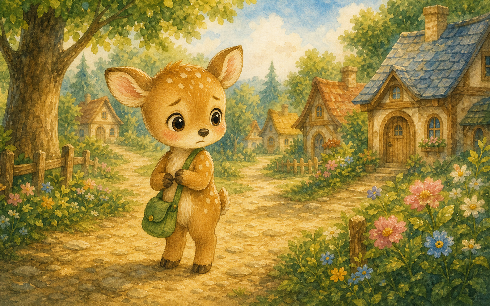
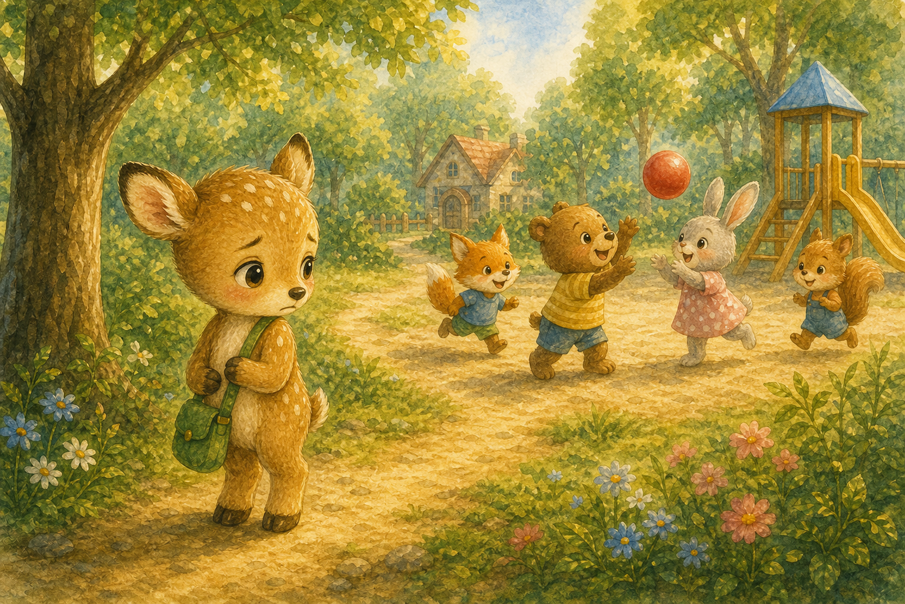
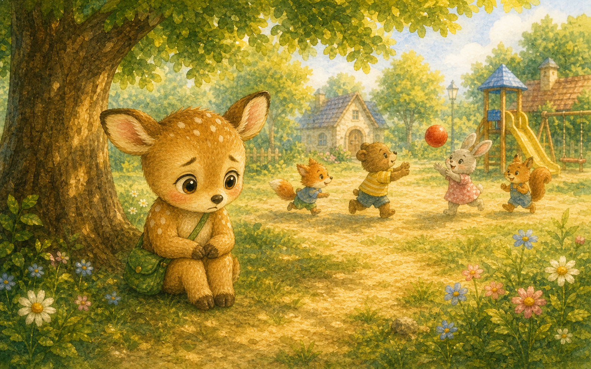
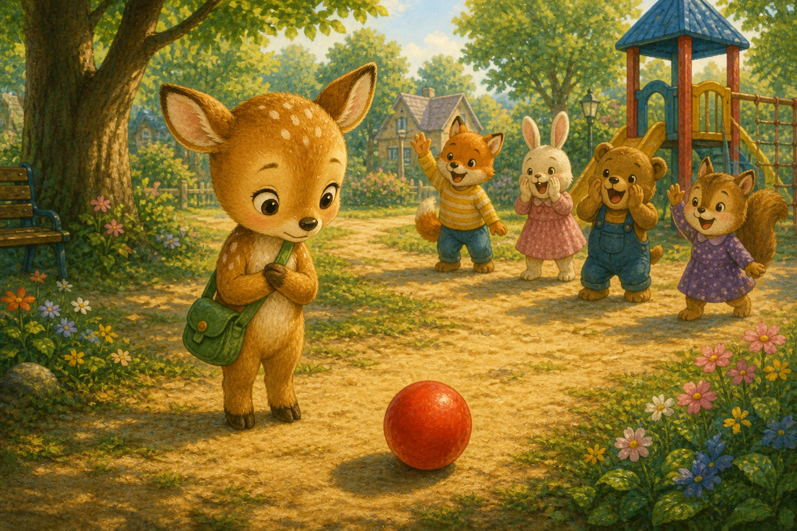
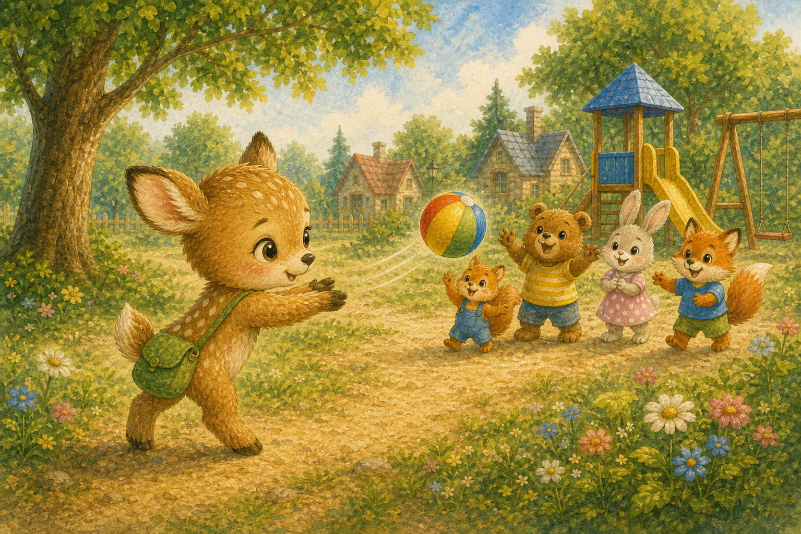
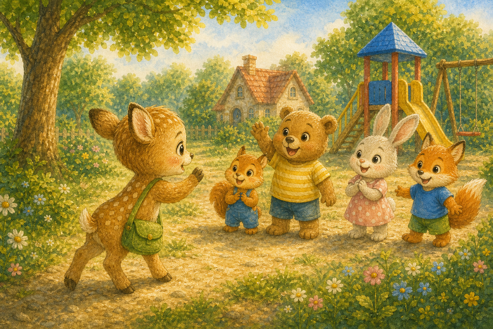
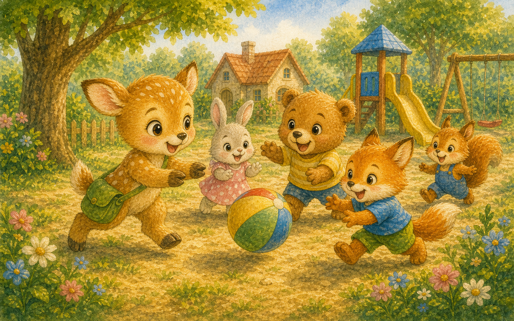
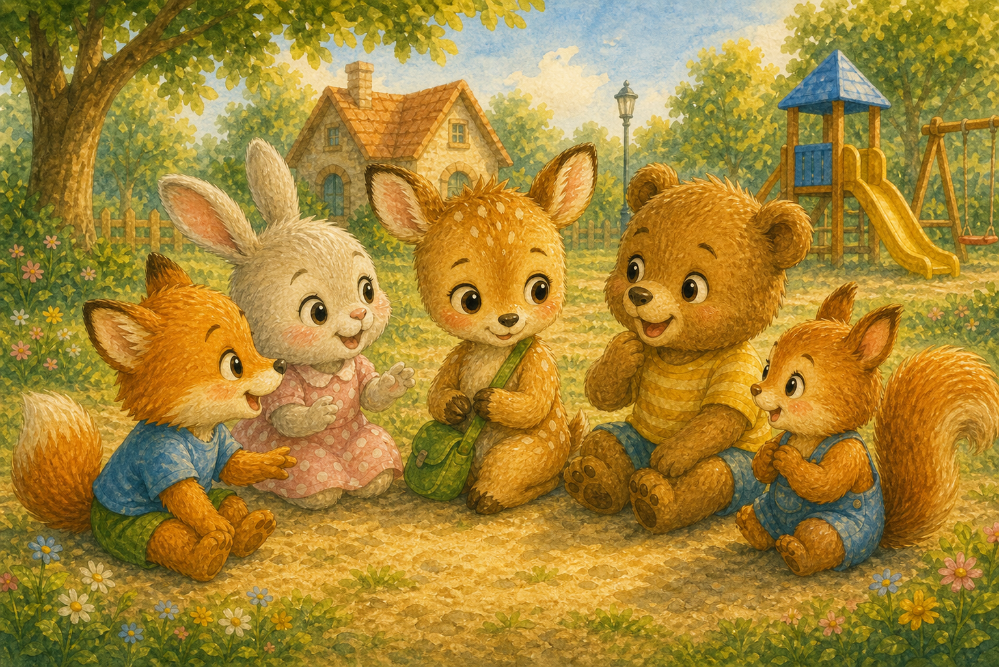
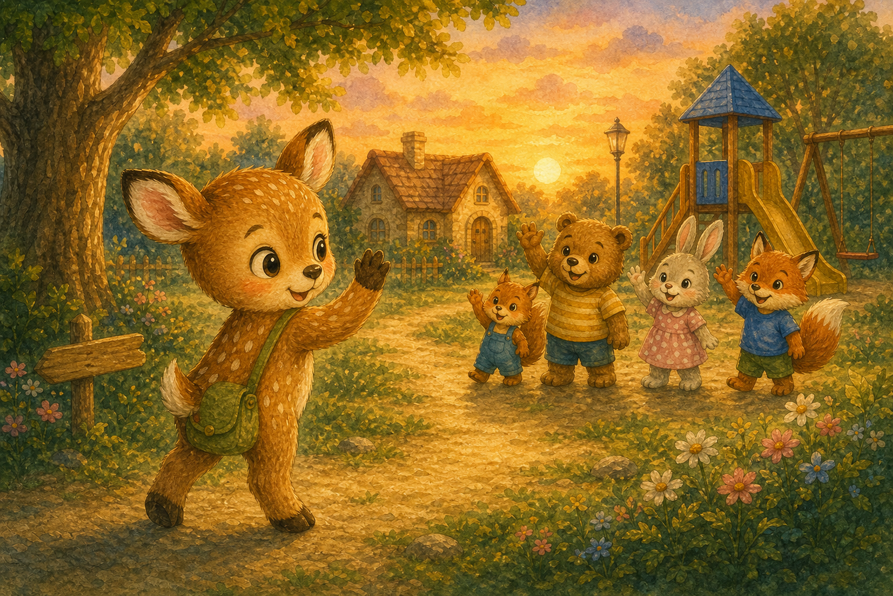
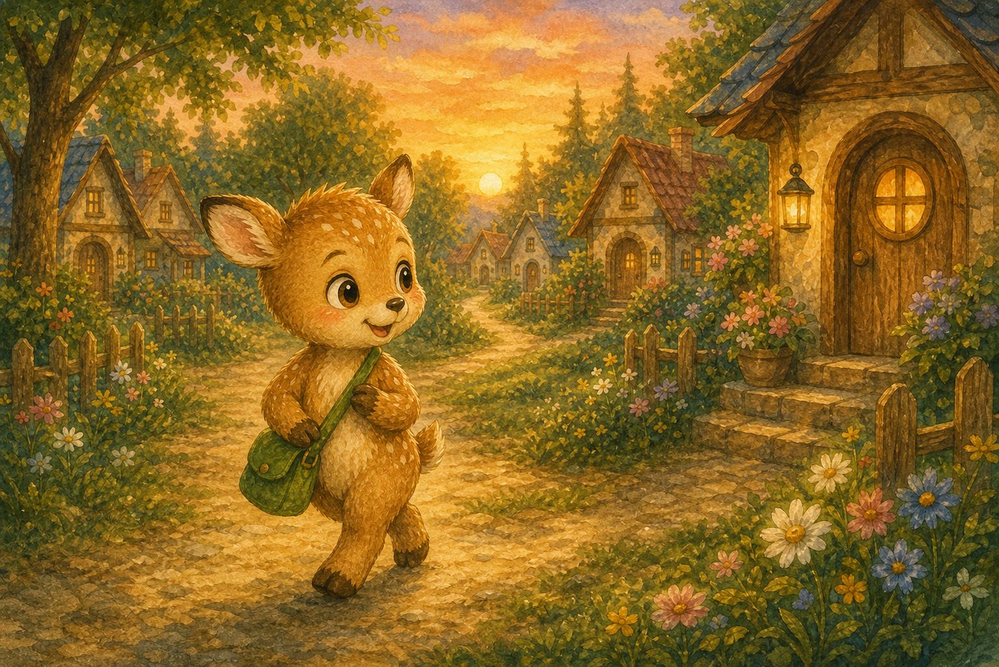

새로 온 마을
아기 사슴 별이는 새 마을로 막 이사를 왔어요. 아는 친구가 하나도 없어 마음이 쓸쓸했지요.
"여기서 친구를 사귈 수 있을까?"

아기 사슴 별이는 새 마을로 막 이사를 왔어요. 아는 친구가 하나도 없어 마음이 쓸쓸했지요.
"여기서 친구를 사귈 수 있을까?"

놀이터에서는 친구들이 즐겁게 놀고 있었어요. 별이는 다가가고 싶었지만 발이 떨어지지 않았지요.
"끼워 달라고 해도 될까?"

별이는 나무 그늘에 혼자 앉아 있었어요. 함께 놀고 싶은 마음이 가슴속에서 콩닥거렸답니다.
용기가 조금만 더 있으면 좋겠어요.

그때 공 하나가 데구루루 굴러 별이 앞에 멈췄어요. 친구들이 "공 좀 던져 줄래?" 하고 외쳤지요.
별이의 가슴이 두근거렸어요.

별이는 공을 두 손으로 들어 힘껏 던졌어요. 공은 친구들에게 정확히 도착했답니다.
"고마워! 같이 놀래?"

별이는 용기를 내어 다가가 인사했어요. "안녕, 나는 별이야"라고 또박또박 말했지요.
먼저 손을 내미니 마음이 가벼워졌어요.

별이는 친구들과 신나게 공놀이를 했어요. 깔깔 웃음소리가 놀이터에 가득 퍼졌답니다.
"같이 노니까 백 배는 더 재밌어!"

친구들은 별이의 이름을 부르며 함께 어울렸어요. 서로의 이름을 알자 더 가까워진 기분이었지요.
"별이야, 내일도 같이 놀자!"

해가 질 무렵 친구들과 손을 흔들며 헤어졌어요. 별이의 쓸쓸했던 마음은 어디론가 사라졌지요.
"내일이 벌써 기다려져!"

별이는 먼저 손을 내밀면 친구가 생긴다는 걸 알았어요. 작은 용기 하나가 새 친구들을 데려다주었답니다.
"먼저 인사하길 정말 잘했어!"